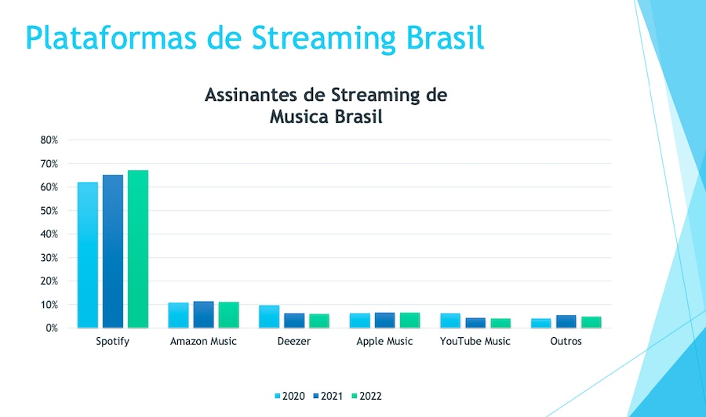
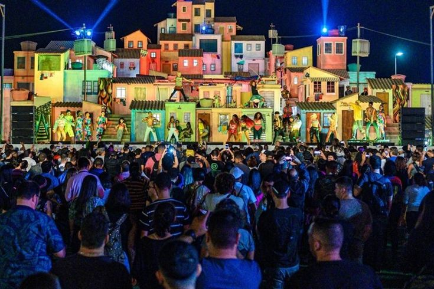

Crescimento nas Plataformas Digitais
Atualmente, a música brasileira é muito divulgada por meio das plataformas digitais e redes sociais. Aplicativos de streaming permitem que artistas publiquem suas músicas sem depender apenas de gravadoras tradicionais.
Isso fez com que novos cantores e bandas ganhassem espaço mais rápido e alcançassem grandes públicos.
Hoje é comum músicas ficarem famosas primeiro na internet e depois nas rádios.

Mistura de Estilos
Uma característica da música brasileira atual é a mistura de gêneros. Muitos artistas combinam sertanejo com pop, funk com eletrônico, rap com MPB e outros estilos.
Essa mistura cria sons novos e diferentes, atraindo públicos variados.
A colaboração entre artistas de estilos diferentes também se tornou muito comum.
Gêneros em Destaque
Entre os estilos mais ouvidos atualmente estão o sertanejo moderno, o funk, o rap nacional e o pop brasileiro.
Esses gêneros dominam as paradas musicais e acumulam milhões de reproduções nas plataformas digitais.
Mesmo assim, estilos tradicionais como samba e MPB continuam sendo produzidos e valorizados.
Novos Artistas
A cada ano surgem novos artistas que conseguem destaque rápido por meio de vídeos curtos e redes sociais.
Muitos começam de forma independente e constroem carreira com apoio do público online.
Isso mostra como o cenário musical está mais aberto e acessível.
Shows e Festivais
Festivais e grandes shows continuam sendo parte importante da música brasileira atual.
Eventos reúnem artistas de vários estilos e atraem públicos grandes.
Além disso, transmissões ao vivo pela internet aumentaram o alcance das apresentações.
Imagem Atual

A música atual mistura tecnologia, performance e interação com o público.